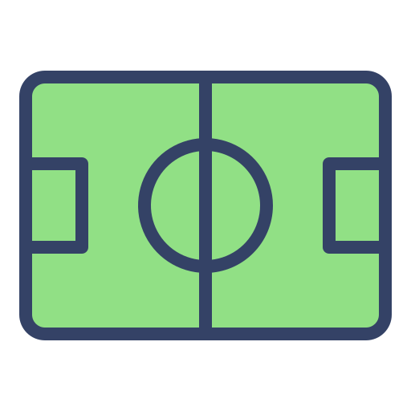
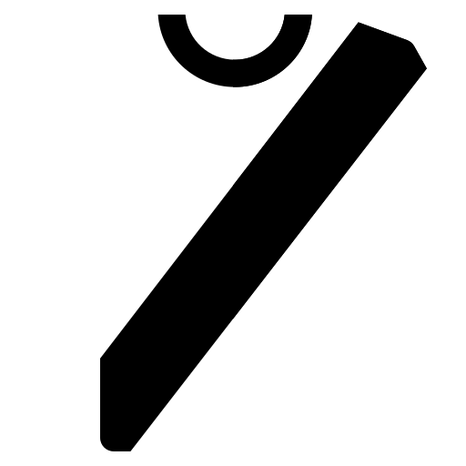
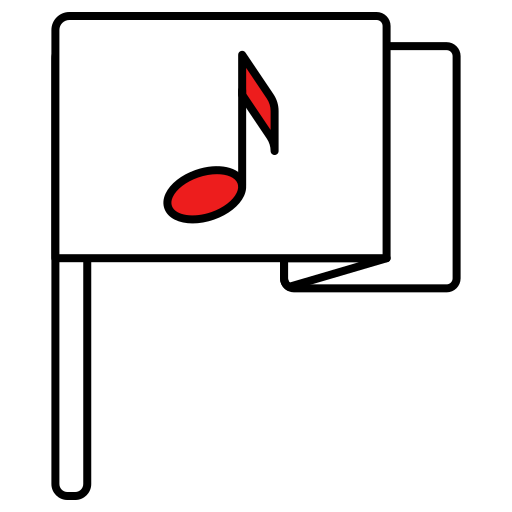

O Club de Regatas Vasco da Gama, comumente conhecido como Vasco, é um dos clubes de futebol mais
tradicionais do Brasil. Fundado em 21 de agosto de 1898, no Rio de Janeiro, por um grupo de remadores, o
clube começou como uma agremiação esportiva voltada para o remo. Ao longo dos anos, o Vasco expandiu
suas atividades esportivas, incluindo o futebol. Tornou-se um dos pioneiros na aceitação de jogadores
negros em uma época em que o preconceito racial era prevalente no esporte brasileiro. Essa postura
inclusiva rendeu ao clube a alcunha de "Time da Virada", destacando-se por sua atuação em campo e por
promover a igualdade.
O Vasco alcançou notoriedade no futebol brasileiro, conquistando vários títulos importantes, como o
Campeonato Brasileiro, a Copa do Brasil e o Campeonato Carioca. O clube também teve participações de
destaque em competições internacionais. Além do futebol, o Vasco também possui destaque em outras
modalidades esportivas, como o remo, onde teve grande sucesso ao longo dos anos.
A história do Vasco é marcada por conquistas esportivas, pioneirismo social e uma base de torcedores
fervorosa, tornando o clube uma instituição admirada e respeitada no cenário esportivo brasileiro.
 História
História
 Estádio
O Estádio de São Januário é um ícone do futebol brasileiro localizado no Rio de Janeiro. Inaugurado em
1927, pertence ao Club de Regatas Vasco da Gama. O estádio foi construído durante a gestão do presidente
do Vasco, Antônio Fernandes da Silveira, e recebeu o nome em homenagem ao santo padroeiro do clube, São
Januário.
Ao longo de sua história, São Januário testemunhou momentos significativos, incluindo conquistas
esportivas do Vasco e eventos marcantes no futebol brasileiro. O estádio tem uma capacidade considerável
e já sediou diversos jogos importantes, incluindo partidas da seleção brasileira.
Além do futebol, São Januário também abriga outras atividades esportivas e eventos culturais. Sua
arquitetura e atmosfera proporcionam uma experiência única para os torcedores. Ao longo dos anos, o
estádio passou por reformas e melhorias para atender aos padrões modernos e garantir o conforto dos
espectadores.
São Januário é um símbolo da paixão e tradição do Vasco da Gama, além de contribuir
significativamente
para a rica história do futebol brasileiro.
 Uniformes
A história dos uniformes do Vasco da Gama é rica e cheia de tradição. As cores principais do clube são o
preto e o branco, refletindo a simplicidade e a elegância. O uniforme tradicional consiste em camisas
listradas em preto e branco, calções pretos e meiões pretos ou listrados.
O primeiro uniforme do Vasco era totalmente preto, mas em 1924, a camisa listrada foi adotada como forma
de homenagear o clube inglês Newcastle United. Desde então, as listras horizontais em preto e branco
tornaram-se a marca registrada do Vasco.
Nos anos seguintes, o clube introduziu variações nos uniformes, experimentando com diferentes
padrões e detalhes. No entanto, as listras horizontais foram mantidas como elemento central da
identidade visual do Vasco. Além do uniforme principal, o clube também teve uniformes alternativos ao
longo dos anos, muitas vezes incorporando variações nas cores ou designs. No entanto, a predominância do
preto e branco permaneceu constante.
Os uniformes do Vasco não apenas representam a identidade do clube, mas também contam a história de
suas conquistas e tradições ao longo dos anos, sendo um elemento essencial na cultura e no imaginário
dos torcedores.
 Hino
Vamos todos cantar de coração
A Cruz de Malta é o meu pendão
Tu tens o nome do heroico português
Vasco da Gama, a tua fama assim se fez
Tua imensa torcida é bem feliz
Norte-Sul, Norte-Sul deste Brasil
Tua estrela, na terra a brilhar
Ilumina o mar
No atletismo, és um braço
No remo, és imortal
No futebol, és um traço
De união Brasil-Portugal
No atletismo, és um braço
No remo, és imortal
No futebol, és um traço
De união Brasil-Portugal
Vamos todos cantar de coração
A Cruz de Malta é o meu pendão!
Tu tens o nome do heroico português
Vasco da Gama, a tua fama assim se fez
Tua imensa torcida é bem feliz
Norte-Sul, Norte-Sul deste Brasil
Tua estrela, na terra a brilhar
Ilumina o mar
No atletismo, és um braço
No remo, és imortal
No futebol, és um traço
De união Brasil-Portugal
No atletismo, és um braço
No remo, és imortal
No futebol, és um traço
De união Brasil-Portugal